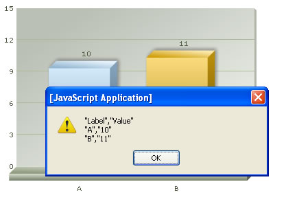

Exporting Chart Data > Using JavaScript Menu |
||||||||||||
You can access the data of the chart from its JavaScript API as well. |
||||||||||||
| Setting up the chart to allow JavaScript export | ||||||||||||
When using the JavaScript API to access chart data, you first need to make sure of the following things:
|
||||||||||||
<HTML> |
||||||||||||
| When you run this code, you should get a screen as under: | ||||||||||||
|  | ||||||||||||
| Customizing the output CSV | ||||||||||||
| The customization attributes for exported CSV data still remain the same, as under (to be specified in chart XML): | ||||||||||||
|
||||||||||||